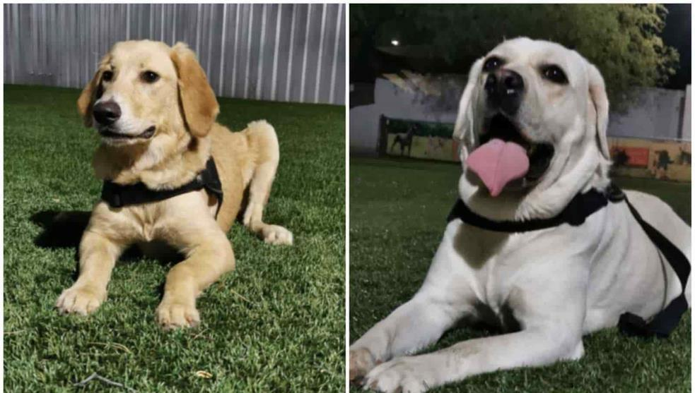
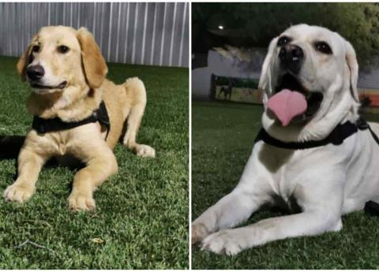
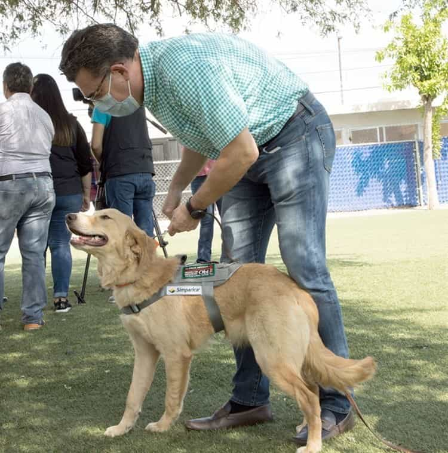
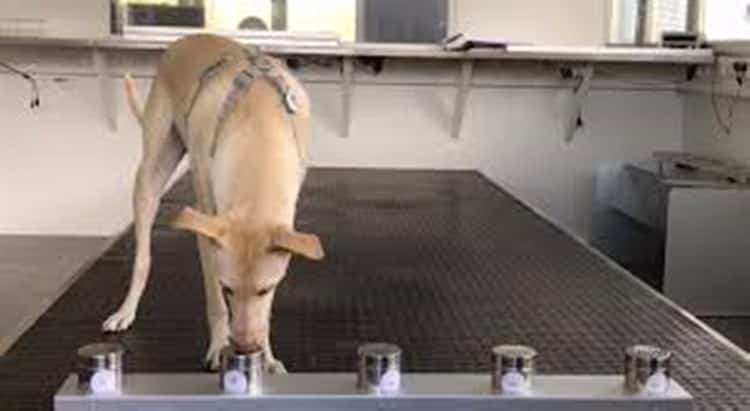
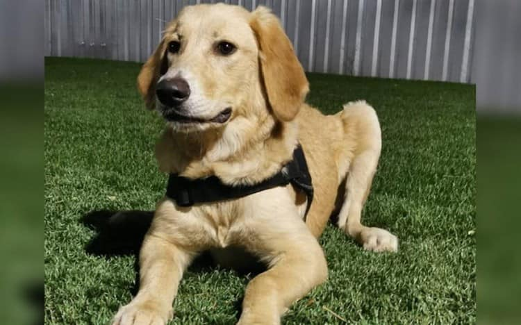

Entrenan a 10 perros en Sonora para detectar covid-19
Sonora es uno de los primeros estados de la República Mexicana en adoptar a perros como un mecanismo para detectar covid-19, teniendo como evidencia a Finlandia y Francia que están apoyando este proyecto, y que ya lo pusieron en práctica con buenos resultados.
De los 10 perros que entrenan, los primeros cuatro terminarán su entrenamiento en dos semanas y serán asignados a puntos estratégicos de detección de coronavirus, donde se atienden a sospechosos del virus, así como en hospitales públicos y en el aeropuerto de Hermosillo.
Se tiene evidencia compartida por investigadores de Finlandia y Francia que están apoyando este proyecto que es impulsado por la secretaria local y otras instituciones de que los perros pueden detectar el virus, a través del olfato incluso antes de que las pruebas rápidas.Motivo por el cual, empelarán esta estrategia en la lucha contra el coronavirus en Sonora.

El interés de Sonora en perros para detectar la covid-19 detrás de la actual pandemia está en que hay varios estudios globales que aseguran que los perros pueden detectar el coronavirus casi inmediatamente.
Así quedó comprobado en un estudio de la Universidad de Medicina Veterinaria en Hannover, Alemania.Los resultados hasta ahora son alentadores, los expertos aseguran que los perros pueden entrenarse en una semana para detectar casos positivos.

Según el estudio la tasa de precisión es del 94%, pero aclara que el rango puede variar de acuerdo con el entrenamiento del perro, por lo que los resultados solo deben ser considerados como 'preliminares'.
Mientras que, en Estados Unidos, los perros lograron distinguir casos positivos a partir de una muestra de orina.Sin embargo, los mismos investigadores admitieron al Washington Post que trasladar a perros que detecten la enfermedad en entornos no controlados todavía se ve lejano.
En el aeropuerto de Dubai ya se utilizan perros para localizar sospechosos de covid-19, pero el propio Ministerio del Interior dijo que los perros utilizados tienen una precisión del 92%.
Los perros utilizados para este entrenamiento de detección de covid-19 en Sonora son: golden retriever, labrador, pastor alemán y pastor belga.
Golden retriever: es un excelente animal de compañía tiene aptitudes como perro de asistencia, de terapia, perro policía, perro bombero e incluso como perro de rescate.Son pacientes, inteligentes, muy dinámicos y fáciles de adiestrar.


Una publicación compartida por Jack ??(@jack.gff) el 14 de Oct de 2020 a las 1:39 PDT
Labrador: es un perro inteligente, activo y muy amigable.Son excelentes perros de rescate, perros de terapia y perros de asistencia.Son fáciles de entrenar.

Pastor alemán: se caracteriza por ser equilibrado, seguro y confiable, es uno de los perros más solicitados para la guardia y protección.Se adapta muy bien a cualquier técnica de adiestramiento.
Pastor belga: es un perro muy inteligente, activo e incansable.Es fácil de educar y de adiestrar.
(Con información de lopezdoriga.com, xataka y expertoanimal)
Posted On: 2020-10-14T00:00:00
Content Date: 2020-10-14
Download Date: 2021-04-08
Document ID: L0C049IUT